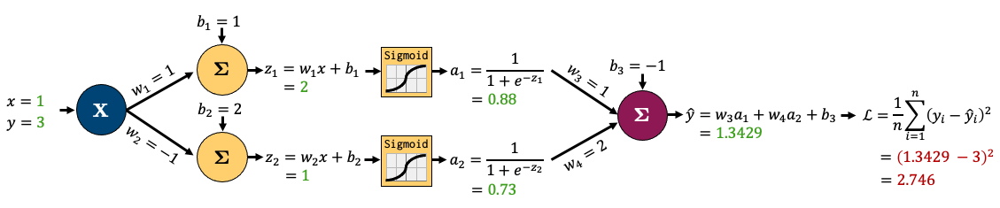
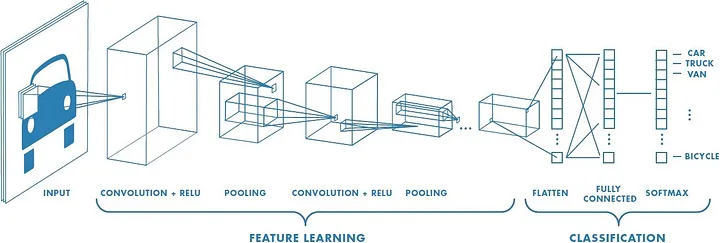
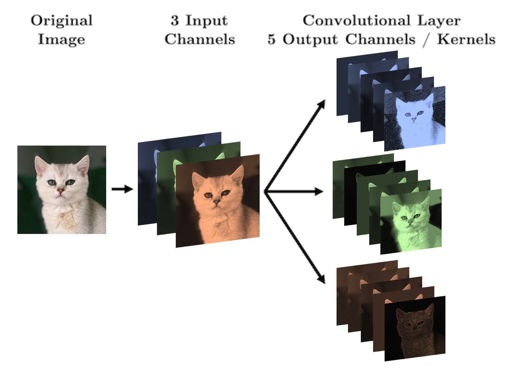
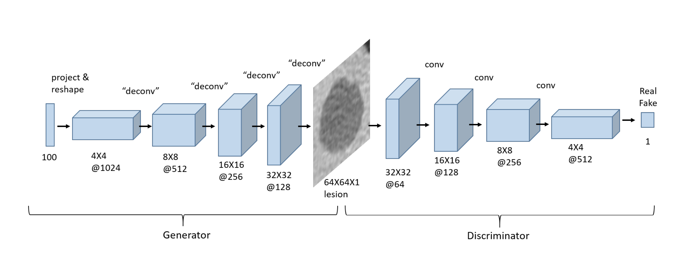

572 Quiz 2
Backpropagation
Basic concept
It is to calculate the gradient of the loss function with respect to the weights
It is a special case of the chain rule of calculus
Process:
- Do “forward pass” to calculate the output of the network (prediction and loss)

- Do “backward pass” to calculate the gradients of the loss function with respect to the weights. Below is an example of reverse-mode autmatic differentiation (backpropagation):

Torch: Autograd
torch.autogradis PyTorch’s automatic differentiation engine that powers neural network training
Vanishing and Exploding Gradients
- Backpropagation can suffer from two problems because of multiple chain rule applications:
- Vanishing gradients: the gradients of the loss function with respect to the weights become very small
- 0 gradients because of underflow
- Exploding gradients: the gradients of the loss function with respect to the weights become very large
- Vanishing gradients: the gradients of the loss function with respect to the weights become very small
- Possible solutions:
- Use ReLU activation function: but it can also suffer from the dying ReLU problem (gradients are 0)
- Weight initialization: initialize the weights with small values
- Batch normalization: normalize the input layer by adjusting and scaling the activations
- Skip connections: add connections that skip one or more layers
- Gradient clipping: clip the gradients during backpropagation
Training Neural Networks in PyTorch
Preventing Overfitting
- Add validation loss to the training loop
- Early stopping: if we see the validation loss is increasing, we stop training
- Define a patience parameter: if the validation loss increases for
patienceepochs, we stop training
- Define a patience parameter: if the validation loss increases for
- Regularization: add a penalty term to the loss function to prevent overfitting
- See 573 notes for more details
weight_decayparameter in the optimizer
- Dropout: randomly set some neurons to 0 during training
- It prevents overfitting by reducing the complexity of the model
torch.nn.Dropout(0.2)
PyTorch Trainer Code
import torch
import torch.nn as nn
def trainer(model, criterion, optimizer, trainloader, validloader, epochs=5, patience=5):
"""Simple training wrapper for PyTorch network."""
train_loss = []
valid_loss = []
for epoch in range(epochs): # for each epoch
train_batch_loss = 0
valid_batch_loss = 0
# Training
for X, y in trainloader:
optimizer.zero_grad() # Zero all the gradients w.r.t. parameters
y_hat = model(X).flatten() # Forward pass to get output
loss = criterion(y_hat, y) # Calculate loss based on output
loss.backward() # Calculate gradients w.r.t. parameters
optimizer.step() # Update parameters
train_batch_loss += loss.item() # Add loss for this batch to running total
train_loss.append(train_batch_loss / len(trainloader))
# Validation
with torch.no_grad(): # this stops pytorch doing computational graph stuff under-the-hood and saves memory and time
for X_valid, y_valid in validloader:
y_hat = model(X_valid).flatten() # Forward pass to get output
loss = criterion(y_hat, y_valid) # Calculate loss based on output
valid_batch_loss += loss.item()
valid_loss.append(valid_batch_loss / len(validloader))
return train_loss, valid_loss- Using the
trainerfunction:
import torch
import torch.nn
import torch.optim
torch.manual_seed(1)
model = network(1, 6, 1)
criterion = torch.nn.MSELoss()
optimizer = torch.optim.Adam(model.parameters(), lr=0.05) # weight_decay=0.01 for L2 regularization
train_loss, valid_loss = trainer(model, criterion, optimizer, trainloader, validloader, epochs=201, patience=3)
plot_loss(train_loss, valid_loss)Universal Approximation Theorem
- Any continuous function can be approximated arbitrarily well by a neural network with a single hidden layer
- In other words, NN are universal function approximators
Convolutional Neural Networks (CNN)

- Drastically reduces the number of params (compared to NN):
- have activations depend on small number of inputs
- same parameters (convolutional filter) are used for different parts of the image
- Can capture spatial information (preserves the structure of the image)
Convolution
- Idea: use a small filter/kernel to extract features from the image
- Filter: a small matrix of weights (normally odd dimensioned -> for symmetry)
- Notice that the filter results in a smaller output image
- This is because we are not padding the image
- We can add padding to the image to keep the same size
- Padding: add zeros around the image
- Can also add stride to move the filter more than 1 pixel at a time
CNN Structure

CNN in PyTorch
1. Convolutional Layer
conv_1 = torch.nn.Conv2d(in_channels=1, out_channels=6, kernel_size=(3,3))- Arguments:
in_channels: number of input channels (gray scale image has 1 channel, RGB has 3)out_channels: number of output channels (similar to hidden nodes in NN)kernel_size: size of the filterstride: how many pixels to move the filter each timepadding: how many pixels to add around the image

- Size of input image (e.g. 256x256) doesn’t matter, what matters is:
in_channels,out_channels,kernel_size
\[\text{total params} = (\text{out channels} \times \text{in channels} \times \text{kernel size}^2) + \text{out channels}\]
\[\text{output size} = \frac{\text{input size} - \text{kernel size} + 2 \times \text{padding}}{\text{stride}} + 1\]
Dimensions of images and kernel tensors in PyTorch
- Images:
[batch_size, channels, height, width] - Kernel:
[out_channels, in_channels, kernel_height, kernel_width]
2. Flattening
feature learning->classification- Use
torch.nn.Flatten()to flatten the image - At the end need to either do regression or classification
3. Pooling
- Idea: reduce the size of the image
- less params
- less overfitting
- Common types:
- Max pooling: take the max value in each region
- Works well since it takes the sharpest features
- Average pooling: take the average value in each region
- Max pooling: take the max value in each region
Putting it all together
class CNN(torch.nn.Module):
def __init__(self):
super().__init__()
self.main = torch.nn.Sequential(
torch.nn.Conv2d(in_channels=1,
out_channels=3,
kernel_size=(3, 3),
padding=1),
torch.nn.ReLU(), # activation function
torch.nn.MaxPool2d((2, 2)),
...
torch.nn.Flatten(),
torch.nn.Linear(1250, 1)
)
def forward(self, x):
out = self.main(x)
return out- Trainer code is the same as before
Using torchsummary
- To get a summary of the model
- No need to manually calculate the output size of each layer
from torchsummary import summary
model = CNN()
summary(model, (1, 256, 256))Preparing Data
Turning images to tensors
- Normally there are 2 steps:
- create a
datasetobject: the raw data - create a
dataloaderobject: batches the data, shuffles, etc.
- create a
- Use
torchvisionto load the datatorchvision.datasets.ImageFolder: loads images from folders- Assumes structure:
root/class_1/xxx.png,root/class_2/xxx.png, …
import torch
from torchvision import datasets, transforms
IMAGE_SIZE = (256, 256)
BATCH_SIZE = 32
# create transform object
data_transforms = transforms.Compose([
transforms.Resize(IMAGE_SIZE),
transforms.ToTensor()
])
# create dataset object
train_dataset = datasets.ImageFolder(root='path/to/data', transform=data_transforms)
# create dataloader object
train_loader = torch.utils.data.DataLoader(
train_dataset, # our raw data
batch_size=BATCH_SIZE, # the size of batches we want the dataloader to return
shuffle=True, # shuffle our data before batching
drop_last=False # don't drop the last batch even if it's smaller than batch_size
)
# get a batch of data
images, labels = next(iter(train_loader))Saving and loading PyTorch models
- PyTorch documentation
- Convention:
.ptor.pthfile extension
PATH = "models/my_cnn.pt"
# load model
model = bitmoji_CNN() # must have defined the model class
model.load_state_dict(torch.load(PATH))
model.eval() # set model to evaluation mode (not training mode)
# save model
torch.save(model.state_dict(), PATH)Data augmentation
To make CNN more robust to different images + increase the size of the dataset
Common augmentations:
- Crop
- Rotate
- Flip
- Color jitter
data_transforms = transforms.Compose([
transforms.Resize(IMAGE_SIZE),
transforms.RandomVerticalFlip(p=0.5), # p=0.5 means 50% chance of applying this augmentation
transforms.RandomHorizontalFlip(p=0.5),
transforms.ToTensor()
])Hyperparameter Tuning
NN has a lot of hyperparameters
- Grid search will take a long time
- Need a smarter approach: Optimization Algorithms
Examples: Ax (we will use this), Raytune, Neptune, skorch.
Transfer Learning
- Idea: use a pre-trained model and fine-tune it to our specific task
- Install from
torchvision.models- All models have been trained on ImageNet dataset (224x224 images)
- See here for code
Approach 1: Adding layers to pre-trained model
densenet = models.densenet121(weights='DenseNet121_Weights.DEFAULT')
for param in densenet.parameters(): # Freeze parameters so we don't update them
param.requires_grad = False
# can fine-tune to freeze only some layers
list(densenet.named_children())[-1] # check the last layer
# update the last layer
new_layers = nn.Sequential(
nn.Linear(1024, 500),
nn.ReLU(),
nn.Linear(500, 1)
)
densenet.classifier = new_layersThen train the model as usual.
densenet.to(device)
criterion = nn.BCEWithLogitsLoss()
optimizer = torch.optim.Adam(densenet.parameters(), lr=2e-3)
results = trainer(densenet, criterion, optimizer, train_loader, valid_loader, device, epochs=10)Approach 2: Use Extracted Features in a New Model
- Idea:
- Take output from pre-trained model
- Feed output to a new model
Advanced CNN
Generative vs Discriminative Models
| Generative Models | Discriminative Models |
|---|---|
| Directly model the joint probability distribution of the input and output | Model the conditional probability of the output given the input |
| Directly model \(P(y\|x)\) | Estimate \(P(x\|y)\) to then deduce \(P(y\|x)\) |
| Build model for each class | Make boundary between classes |
| “Generate or draw a cat” | “Distinquish between cats and dogs” |
| Examples: Naibe bayes, ChatGPT | Examples: Logistic Regression, SVM, Tree based models, CNN |
Autoencoders

- Designed to reconstruct the input
- Encoder and a decoder
- Why do we need autoencoders?
- Dimensionality reduction
- Denoising
Dimensionality Reduction
- Maybe the z axis is unimportant in the input space for classification
- Only use
encoderpart of the autoencoder
Denoising
- Remove noise from the input
- Use Transposed Convolution Layers to upsample the input
- Normal convolution: downsample (output is smaller than input)
- Transposed convolution: upsample (output is larger than input)
Generative Adversarial Networks (GANs)
- Model used to generate new data (indistinguishable from real data)
- No need for labels (unsupervised learning)
- See here

- Two networks:
- Generator: creates new data
- Discriminator: tries to distinguish between real and fake data
- “Adversarial” because both are battling each other:
- Generator tries to create data that the discriminator can’t distinguish from real data
- Discriminator tries to distinguish between real and fake data
Training GANs
- Train the discriminator (simple binary classification)
- Train the discriminator on real data
- Train the discriminator on fake data (generated by the generator)
- Train the generator
- Generate fake images with the generator and label them as real
- Pass to discriminator and ask it to classify them (real or fake)
- Pass judgement to a loss function (see how far it is from the ideal output)
- ideal output: all fake images are classified as real
- high loss: discriminator is good at distinguishing between real and fake data
- Do backpropagation and update the generator
- Repeat
Goals:
- Discriminator loss goes to 0.5 (can’t distinguish between real and fake data)
- Generator loss goes to 0 (can generate data that looks like real data)
Notes:
- If discriminator is too good, the generator will never learn because there will be no opportunity to improve
Pytorch Implementation
Creating the data loader
Creating the generator
class Generator(nn.Module): def __init__(self, LATENT_SIZE): super(Generator, self).__init__() self.main = nn.Sequential( nn.ConvTranspose2d(LATENT_SIZE, 1024, kernel_size=4, stride=1, padding=0, bias=False), nn.BatchNorm2d(1024), nn.LeakyReLU(0.2, inplace=True), ... nn.ConvTranspose2d(128, 3, kernel_size=4, stride=2, padding=1, bias=False), nn.BatchNorm2d(3), nn.Tanh() ) def forward(self, input): return self.main(input)Creating the discriminator (Always a binary classifier)
Instantiating the models
LATENT_SIZE = 100 generator = Generator(LATENT_SIZE).to(device) discriminator = Discriminator().to(device) criterion = nn.BCELoss() optimizerG = optim.Adam(generator.parameters(), lr=0.001, betas=(0.5, 0.999)) optimizerD = optim.Adam(discriminator.parameters(), lr=0.001, betas=(0.5, 0.999)) def weights_init(m): if isinstance(m, (nn.Conv2d, nn.ConvTranspose2d)): nn.init.normal_(m.weight.data, 0.0, 0.02) elif isinstance(m, nn.BatchNorm2d): nn.init.normal_(m.weight.data, 1.0, 0.02) nn.init.constant_(m.bias.data, 0) generator.apply(weights_init) discriminator.apply(weights_init);Training the GAN
Visualize training process
Multi-Input Networks
class multiModel(nn.Module):
def __init__(self):
super().__init__()
...
def forward(self, image, data):
x_cnn = self.cnn(image) # 1st model: CNN
x_fc = self.fc(data) # 2nd model: Fully connected
return torch.cat((x_cnn, x_fc), dim=1) # concatenate the two outputs